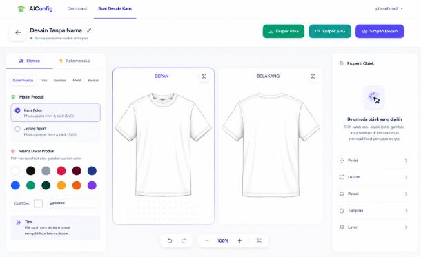

Featured AppVisual Configurator
Peran: Full Stack Developer
Aplikasi konfigurasi visual interaktif yang membantu pengguna menguji dan memvisualisasikan rekomendasi desain, kombinasi elemen, serta palet warna secara real-time.
- Konfigurasi visual dan skema tema real-time.
- Antarmuka interaktif dan responsif berbasis Tailwind CSS.
- Struktur backend dan database terintegrasi dengan Laravel & MySQL.